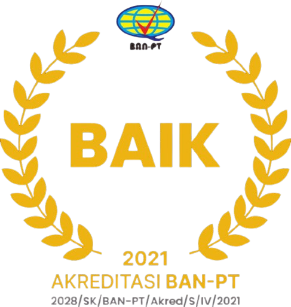
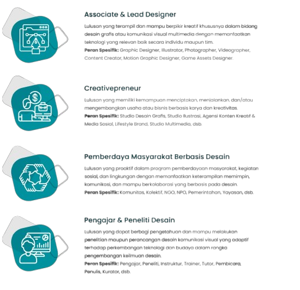

DESAIN KOMUNIKASI VISUAL
FKOM - UNIKU
DESKRIPSI
Program Studi Desain Komunikasi Visual Universitas Kuningan (DKV Uniku) berkomitmen mencetak lulusan yang kreatif, terampil, dan adaptif terhadap perkembangan teknologi serta kebutuhan masyarakat.
VISI
Menjadi Program Studi Desain Komunikasi Visual yang unggul dalam menghasilkan lulusan yang terampil dan kreatif...
MISI
- Mengembangkan kurikulum yang inovatif berbasis capaian...
- Mendorong pengintegrasian nilai kelokalan...
- Menyediakan fasilitas dan sumber daya yang mendukung...
AKREDITASI

ALAMAT
Kampus uniku 2 (FKOM), jl.Pramuka No. 67, Purwawinangun, kabupaten kuningan, provinsi jawa barat - 45512
dkv@uniku.ac.id
PROFIL LULUSAN & PILIHAN KARIR
